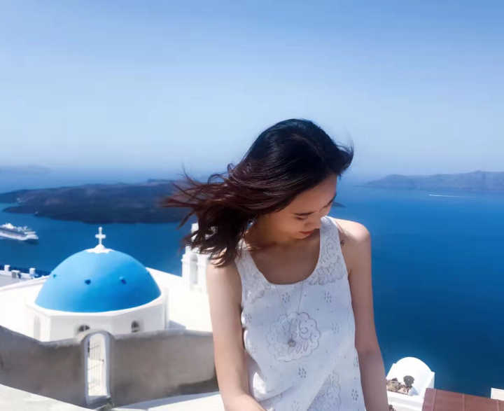
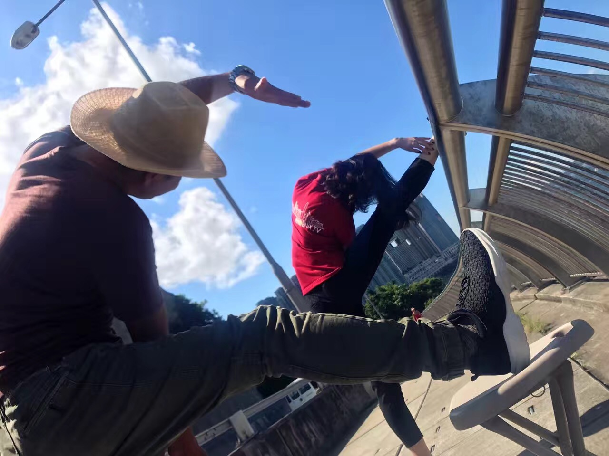

名字:
潘玥
性别:女

介绍:凤凰卫视记者/前新东方托福雅思听口教师
问题
答案
新建于:2017-08-25 07:56:00 PM，更新于2017-08-25 08:48:02 PM
正文: 同道大叔总说“摩羯的轴，轴到白头”，是的，我们摩羯宝宝（包括人民币上那位爷爷）在很多事情上都有着“谜之坚持”（自豪脸）。
要说五年来一直坚持做的事，应该算是海了去了，之前关注过的盆友都知道，我坚持练习跳舞二十多年、坚持和同一个人恋爱十年直到结婚、坚持学习与从事新闻业十年直到现在，还坚持学习、日记、旅行、护肤等等，这些我在之前都有详细写过，感兴趣的小伙伴可以戳以下链接进行回顾（我可是四月才注册知乎的噢，写这么多干货文章应该也算一种坚持咯）：
高度自律是种怎样的体验？
https://www.
zhihu.com/question/3117
0586/answer/152055475
如何长时间高效学习？
https://www.
zhihu.com/question/2835
8499/answer/209568240
为什么越努力越焦虑？
https://www.
zhihu.com/question/3767
2919/answer/214298120
记者还是一个好职业吗？还值得年轻人为之奋斗吗？
https://www.
zhihu.com/question/5747
6672/answer/154292148
不甘平庸是种怎样的体验？
https://www.
zhihu.com/question/6299
0816/answer/218753201
什么是极简主义的生活方式？
https://www.
zhihu.com/question/2370
3464/answer/213671364
如何变成有趣的人？
https://www.
zhihu.com/question/2077
0272/answer/217848482
成长过程中，有哪些道理让人懂之恨晚
https://www.
zhihu.com/question/2039
5761/answer/218646004
有什么道理是开始注重外表几年后才悟出来的？
https://www.
zhihu.com/question/3163
7529/answer/215986376
日常生活中你有哪些能让皮肤变好的小习惯?
https://www.
zhihu.com/question/2778
4404/answer/214551832
好啦欢迎回来，今天我想说一些不太摩羯、比较轻松实用的小小“坚持tips”，希望能够帮助到大家^o^
1、作为记者，随时都要外出奔波采访，放假时我又总是天南海北旅行，因而养成了些“在路上”的小习惯。
➡️搭乘长途飞机时【坚持带最轻量的“褪黑素”】，算好目的地入夜时间吃上一片，套上环枕、换上拖鞋、盖上毛毯，一觉睡醒洗把脸展开清爽一天，这个对于我们这种落地就要干活儿的新闻狗来说是绝佳的时差神器。
➡️香港的飞车水平也许有人体验过，但我们经常要在飞车中写稿（赶新闻争分夺秒你们懂的），以前我也灰常晕车，但这几年完全免疫（现在就是在飞车上写知乎），秘诀是：【坚持全程】要么睡觉、要么低头看手机电脑、要么望向窗外，尽量不要进行排列组合（比如看手机一会儿看外面一会儿），否则难免会在飞车后或途中就晕得翻江倒海。
2、作为女（汉）纸，经常是吃了上顿没下顿、早出晚归昼夜颠倒的日常，这样势必会影响内分泌，不过我虽然人比较瘦但还算健康，原因也是坚持了一些爱惜身体的小习惯（你们比我有条件就更该坚持）。
➡️【坚持吃早饭】我无论早上几点的采访，都一定会提前一小时起床（哪怕是五点到机场接领导人我也会四点起床），洗漱化妆半小时（工作需要没办法），期间我会在微波炉加热馒头包子烧卖之类，顺手在锅里煮一只鸡蛋，再冲一碗芝麻糊杏仁糊燕麦之类，冰箱拿出来一小盒酸奶或者一杯果汁（放半个小时再喝），再有一小份水果（我喜欢香蕉桃子火龙果牛油果车厘子，逮啥吃啥），但是吃所有这些之前一定会喝一大杯温水，是的我在大家都懒得早起的情况下用半个小时吃饭是有点“奢侈”，但这可能是我全天唯一可以“优雅吃饭”的时间，所以会特别坚持“早餐丰盛有营养”。
➡️【坚持锻炼身体】之前我写过自己坚持练习舞蹈二十多年，但那需要比较充裕的时间和空间，平时下班不是太晚的时候，我都会去楼下的海滨公园跑步或者快走，视当天的任务轻重而定（如果白天已经在外徒步N公里那就算了），但无论是何种方式的运动都必须要坚持热身，我通常是压腿或者下腰（图为欢送“辽宁号”离港时和摄像大哥的即时锻炼哈哈）。

3、作为年轻人，必须不能只醉心于工作和学习活得像个老干部，所以我一向在业余时间【坚持慵懒、坚持玩乐】，相信这也是大家最想看到的一点。
➡️【坚持每周至少睡个懒觉】，是的我在放假的日子里一定会不顾一切睡个懒觉（不要以为我这种人天天都是打鸡血），毕竟人不是机器不能无休无止，睡懒觉对我而言就像是给手机充电，并且是一次过冲到百分百的那种，而不是边消耗边充电（据说那样对手机也不太好）。你们每天有条件睡美容觉，而我也要尽量对自己好一点点（糟糕，此处无配图哈哈^o^）
➡️【坚持吃喝玩乐的激情】，虽然平时为了工作我都吃得很健康，但放假时还是要偶尔奖励自己报复社会，比如说火锅撸串儿小龙虾（是的我知道那都不干净），另外就是我玩起来时特爱凑热闹，什么话剧演唱会足球赛一个都不能少，因为当我在人群中起哄呐喊拍巴掌的时候，真心觉得自己年轻有活力接地气极了（害羞捂脸）。
最后，后天也就是周日晚上八点，有
我的知乎live3.0《成长新知：放下、拾回、重生》
（错过也可随时重听），欢迎大家来听这位摩羯牺牲有限吃喝玩乐时间分享“有价值观的成长方法论”（严肃脸），要知道我可是刚刚冒着绳命危险报道完十号风球的人，用累成狗的诚意邀请你们来聊聊人生。那么我有故事，你有酒吗？
https://www.
zhihu.com/lives/8815854
06829801472